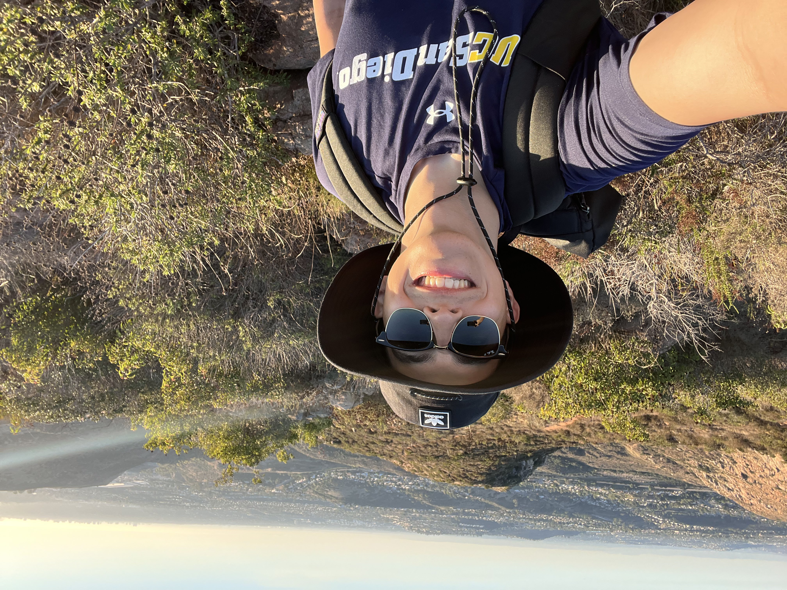

Ultimate Frisbee


During my senior year of college at UCSD, I joined the Ultimate Frisbee team. Making that decision was one of the best decisions I've made since it allowed me to meet some driven people and found a way to destress while attending UCSD. Ultimate Frisbee has taught me the importance of communication and working as a team.
Long distance running

One of my favorite hobbies is long distance running. As of 2024 I've ran for about 10 years. In 2024 I ran the La Jolla half marathon in 1 hour and 33 minutes. A month later I ran the Rock N Roll Marathon in 3 hours and 50 minutes. I ended up running slower in the Marathon due to over training days before which caused me to pull both my calves muscles in the last 6 miles.
Hiking
Another one of my favorite hobbies is hiking. My favorite thing about hikes is that it allows me to be grounded with nature. I joineded the hiking club in 2022 at UCSD. The hiking club enabled me to gain a better understanding of the world since I was able to meet a great amount of people from different places and backgrounds.